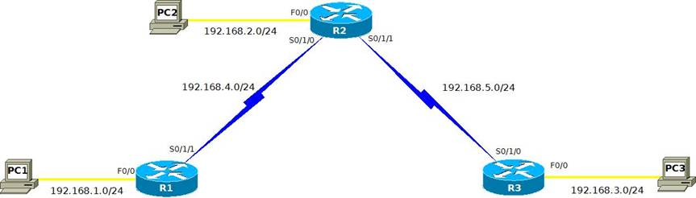

|
Urz¹dzenie |
Interfejs |
Adres IP |
Maska podsieci |
Brama domyœlna |
|
R1 |
Fa0/0 |
192.168.1.1 |
255.255.255.0 |
|
|
S0/1/1 |
192.168.4.2 |
255.255.255.0 |
|
|
|
R2 |
Fa0/0 |
192.168.2.1 |
255.255.255.0 |
|
|
S0/1/0 |
192.168.4.1 |
255.255.255.0 |
|
|
|
S0/1/1 |
192.168.5.1 |
255.255.255.0 |
|
|
|
R3 |
Fa0/0 |
192.168.3.1 |
255.255.255.0 |
|
|
S0/1/0 |
192.168.5.2 |
255.255.255.0 |
|
|
|
PC1 |
NIC |
192.168.1.10 |
255.255.255.0 |
192.168.1.1 |
|
PC2 |
NIC |
192.168.2.10 |
255.255.255.0 |
192.168.2.1 |
|
PC3 |
NIC |
192.168.3.10 |
255.255.255.0 |
192.168.3.1 |
W tym æwiczeniu
laboratoryjnym stworzysz siec podobna do tej z diagramu topologii sieci.
Wykonaj pocz¹tkow¹ konfiguracje routerów wymagan¹ do uzyskania ³¹cznoœci. U¿yj
adresacji, która znajduje siê w tabeli do zaadresowania urz¹dzeñ w sieci. Kiedy
zakoñczysz konfiguracje, sprawdŸ tablice routingu,
aby zweryfikowaæ, czy siec dzia³a poprawnie.
|
Polecenie |
Dzia³anie |
|
ROUTER(config)# interface Serial 0/1/0 |
Wejœcie do trybu
konfiguracji interfejsu Serial0/1/0 |
|
ROUTER(config-if)# ip address A.A.A.A M.M.M.M |
Konfiguracja adresu IP i
maski |
|
ROUTER(config-if)# description opis |
Ustawienie opisu ³¹cza (ma
znaczenie lokalne) |
|
ROUTER(config-if)# clock rate clock |
Ustawienie taktowania na
interfejsie – zegar ustawia siê tylko na interfejsie szeregowym DCE, co jest
zale¿ne od rodzaju zakoñczenia kabla do³¹czonego do interfejsu. |
|
ROUTER(config-if)# no shutdown |
W³¹czenie interfejsu
(domyœlnie interfejsy routera s¹ wy³¹czone) |
|
ROUTER(config-if)# do polecenie |
Wykonuje polecenie trybu uprzywilejowanego w
trybie konfiguracji interfejsu; po jego wykonaniu router pozostaje w tym trybie. |
|
ROUTER# show controllers
interfejs |
Wyœwietla informacje
sprzêtowe o wskazanym interfejsie (w szczególnoœci rodzaj zakoñczenia
do³¹czonego kabla szeregowego) |
|
ROUTER# show
interfaces |
Wyœwietla informacje o
wszystkich interfejsach |
|
ROUTER# show interface interfejs |
Wyswietla informacje o wskazanym interfejsie |
|
ROUTER# show ip interface interfejs |
Wyœwietla informacje o
konfiguracji IP wskazanego interfejsu |
|
ROUTER# show ip interface brief |
Wyœwietla zastawienie wszystkich
interfejsów w³¹czaj¹c stan i przypiszny adres IP |
|
ROUTER# show arp |
Wyœwietla tablicê ARP |
|
ROUTER# show running-config |
Wyœwietla bie¿¹c¹
konfiguracje urz¹dzenia |
|
ROUTER# show
running-config interfejs |
Wyœwietla informacjê o
bie¿¹cej konfoguracji wskazanego interfejsu |
|
ROUTER# show
startup-config |
Wyœwietla konfiguracje
zapisan¹ w pamiêci NVRAM |
|
ROUTER# show cdp |
Wyœwietla ogólne
informacje na temat protoko³u CDP (Cisco
Discovery Protocol). |
|
ROUTER# show cdp neighbors |
Wyœwietla informacje o
do³¹czonych bezpoœrednio urz¹dzeniach Cisco |
|
ROUTER# show cdp entry nazwa |
Wyœwietla informacjê o
do³¹czonym bezpoœrednio urz¹dzeniu Cisco o nazwie nazwa |
|
ROUTER# show cdp entry * |
Wyœwietla informacjê o wszystkich
bezpoœrednio do³¹czonych urz¹dzeniach Cisco. |
|
ROUTER# ping A.A.A.A |
Wysy³a komunikat ICMP echo-request do urz¹dzenia o adresie A.A.A.A |
|
ROUTER# traceroute A.A.A.A |
Œledzenie trasy do
urz¹dzenia o adresie IP A.A.A.A. |
|
ROUTER# telnet A.A.A.A ROUTER2> |
Nawi¹zuje sesjê telnet z
urz¹dzeniem o adresie A.A.A.A |
|
ROUTER2> ^^x ROUTER# |
(naciœniêcie Ctrl-Shift-6,
zwolnienie i naciœniêcie x) Zawieszenie sesji telnet bez jej zakoñczenia. |
|
ROUTER# Enter ROUTER2> |
Wznowienie zawieszonej sesji
telnet |
|
ROUTER# resume ROUTER2> |
Wznowienie zawieszonej
sesji telnet |
|
ROUTER# show session |
Wyœwietla informacjê o
zawieszonych sesjach telnet z innymi urz¹dzeniami |
|
ROUTER# disconnect n |
Roz³¹czenie zawieszonej
sesji telnet o numerze n |